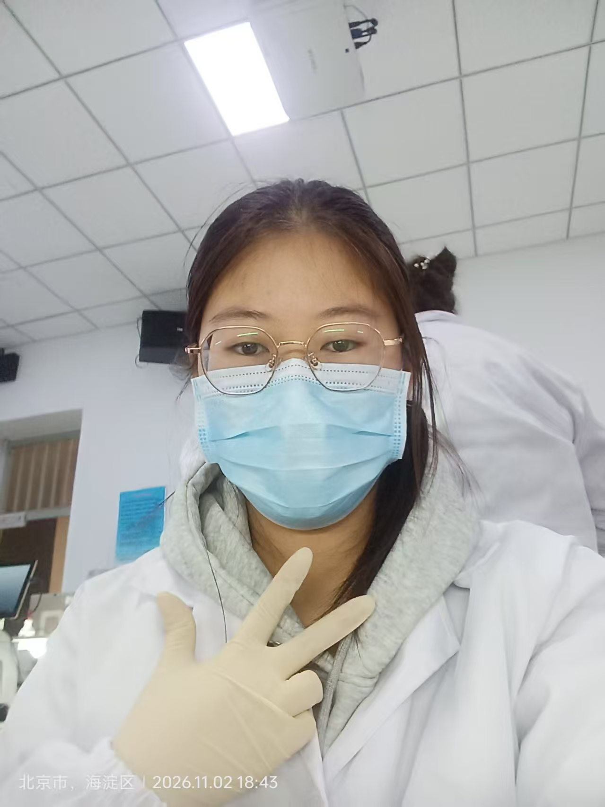
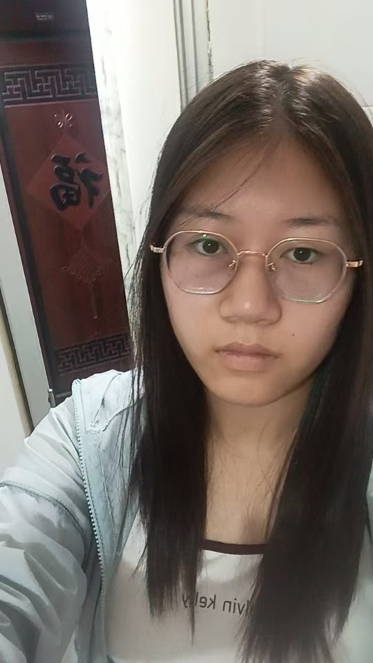
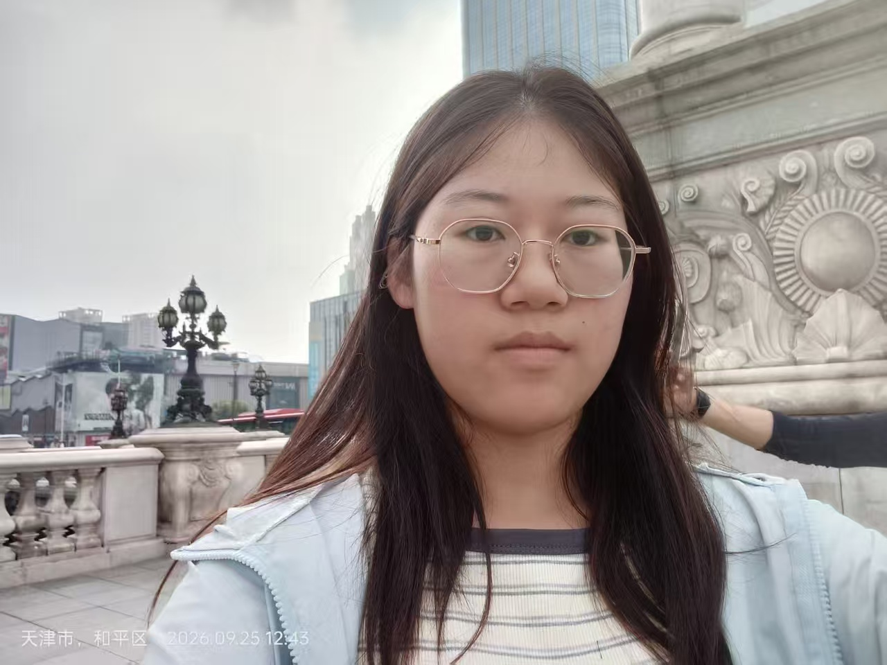
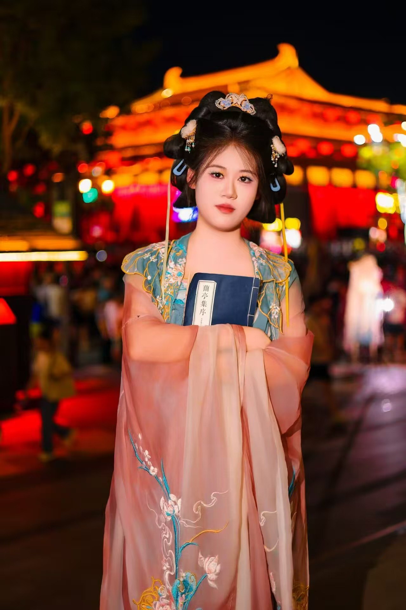

冰海纪
她像一块从极北深海浮上来的冷光，安静，克制，也自带一种不容轻易靠近的压迫感。情绪很少外露，言语也不汹涌，可只要她站在那里，周遭的空气就会慢慢冷下来，像海面之下深不见底的蓝。
她不喜欢喧闹，也不依赖外界的热度证明自己。对她来说，热闹是别人的，深海才是自己的。她习惯于沉默地观察，冷静地判断，然后用最简洁的方式完成该做的事。这种冷静有时会让人觉得疏离，可正是这种疏离，让她显得格外坚定。

沉默的秩序
就读于中国农业大学草坪方向，她与草木、土壤、寂静的生长为伴。这份专业并不张扬，却要求极度的耐心与清晰的判断。她习惯在安静的环境里寻找规律，也习惯把事情埋在心底，不急于解释，不急于被人理解。
现实生活中的她，并不追求耀眼的位置。她更像深海里的白鲸，庞大、温柔、沉默，却有自己游动的方向。她不会轻易被外界扰动，也不会为了迎合别人改变自己的深度。对她来说，秩序比热闹重要，清醒比热度重要。

文字与深渊
她偏爱有思想的文章与小说，喜欢那些不浮于表面、能够真正进入人性深处的文字。对她来说，好的故事不是用来消遣的，而是用来照见某些被隐藏起来的真实。她会被孤独感吸引，会被冷静的叙述打动，也会在复杂的人物关系里看到现实的回声。
她喜欢的文字，往往带着一点冷感、一点距离、一点不肯妥协的清醒。她不怎么看过于甜腻或过于轻浮的故事，更偏爱那种像深海一样缓慢、沉重、余味很长的作品。文字于她，不是装饰，而是另一种形式的深海。
冷海书单
- 《夜晚的潜水艇》：在想象的深海里独自下潜，远处没有岸，也不需要岸。
- 《局外人》：在荒诞的人世里保持清醒，本身就是一种沉默的反抗。
- 《冬泳》：北方的寒冷与现实的重量，会让人看见更坚硬的生活。
- 《月下》：安静的文字里藏着很深的情绪，像海面之下看不见的暗流。
- 《人间失格》：破碎、敏感、孤独，是她偶尔会愿意直视的人性切面。

御姐之心
她的气质里有一种很明确的御姐感：冷静、成熟、克制，也有一点不易接近的锋利。她不会刻意讨好别人，也不会用柔软的语气换取亲近。很多时候，她更像一个冷静的旁观者，站在人群之外，看着一切发生。
可这种冷并不是无情。她只是把情绪放得很深，像深海里的暖流，看不见，却真实存在。一旦她认可某个人，就会给出非常稳定的陪伴。这种陪伴不热烈，不夸张，却足够长久，足够可靠。
她的温柔不是阳光，而是冰蓝色的包裹。表面看起来很冷，靠近之后才会发现，里面其实有很坚定的温度。
契约之印
白鲸并非孤独的生物。在这片冰蓝海域之中，她与狐狸缔结了专属契约。这份契约不是表面的热闹，而是两颗同样骄傲、同样敏感的心，在深海之下达成的沉默共识。
她负责冷静地守住边界，她负责温柔地照见情绪。她们一个像深海，一个像灵火；一个冷，一个亮；一个沉默，一个灵动。单独看时，她们都有各自的锋利；放在一起时，却形成了一种奇异的平衡。
这份契约，只属于白鲸与狐狸。星海为证，冰海为凭，她们将在彼此的映照之下，完成这场关于友谊、理解与永恒的审判。
前 往 契 约 页